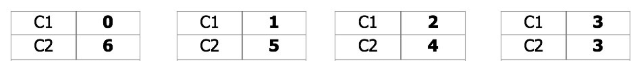

Tree based method
Measures of performance
- Measures of performance? Three usually used methods
- Gini Index: Based on impurity
- Entropy: similar to the Gini Index, is known as the Cross-Entropy or Deviance
- Classification Error Rate: Based on error
- Let’s have a closer look at this Gini Index first
- Here t is the node index; j is the class index; j/t represents the proportion of training observations.
- Gini index is a measure of total variance across the K classes (impurity).
- Lower Gini(t) means better.
Group work Calculate Gini Index:

Same idea can be applied with categorical attributes. Which is better?

How to choose thresholds for continuous attributes? We can also use Gini index.

Same idea can be applied with continuous attributes.

SGini Index can also be used for a collection of nodes where ni = number of records at child i, and n = number of records at parent node p.
</span>
Measures of performance—Gini
\[GINI(t)=1- \Sigma {j}[p(j | t)]^2\]
- With a split of [0,6]: P(C1) = 0/6 = 0 P(C2) = 6/6 = 1, then Gini([0,6]) = 1 – P(C1)2 – P(C2)2 = 1 – 0 – 1 = 0.000
- With a split of [1,5]: P(C1) = 1/6 and P(C2) = 5/6, then Gini([1,5]) = 1 – (1/6)2 – (5/6)2 = 0.278
- With a split of [2,4]: P(C1) = 1/3 and P(C2) = 2/3, then Gini([2,4]) = 1 – (1/3)2 – (2/3)2 = 0.444
-
With a split of [3,3: P(C1) = 1/2 and P(C2) = 1/2, then Gini([3,3]) = 1 – (1/2)2 – (1/2)2 = 0.500
- Compute impurity measure (P) before splitting
- Compute impurity measure (M) after splitting
- Compute impurity measure of each child node
- M is the weighted impurity of children
- Choose the attribute test condition that produces the highest gain:
- Gain = P - M
Measures of performance—Entropy
- I know it is still a little bit confusing. Let’s learn what is Entropy and then we will build a tree together.
- Entropy:
-
is the entropy for a given node t of class j. That is, p(j / t) is the relative frequency of class j at node t.
-
Maximum
is log Nc when records are equally distributed among all classes implying least information. Nc is the number of classes. E.g., if you have three classes and 6 records (i.e. the node is like this C0:2, C1:2, C2:2=> -(1/3)log(1/3)-(1/3)log(1/3)-(1/3)log(1/3)), has maximum is –log(1/3) = 0.477.
-
Minimum
is 0.0 when all records belong to one class, implying most information, e.g., C0:5, C1:0=> -1log1 – (-infi)0= 0
-
Lower
Entropy, means better
Group work:

- Log0 = -inif
- With a split of [0,6]: P(C1) = 0/6 = 0 P(C2) = 6/6 = 1, then Entropy([0,6]) = – 0 log 0 – 1 log 1 = – 0 – 0 = 0.000
- With a split of [1,5]: P(C1) = 1/6 and P(C2) = 5/6, then Entropy([1,5]) = – (1/6) log2 (1/6) – (5/6) log2 (1/6) = 0.65
- With a split of [2,4]: P(C1) = 2/6 and P(C2) = 4/6, then Entropy([2,4]) = – (2/6) log2 (2/6) – (4/6) log2 (4/6) = 0.92
- With a split of [3,3: P(C1) = 1/2 and P(C2) = 1/2, then Entropy([3,3]) = – (1/2) log2 (1/2) – (1/2) log2 (1/2) = 1.00
Measures of performance—Gain
\[GAIN_{split}=Entropy(p)-( \Sigma _{i=1}^{k} \frac{n_i}{n}Entropy(i))\]- Parent Node, p is split into k partitions where ni is number of records in partition i
- Choose the split that achieves most reduction, which maximizes GAIN
- Entropy is used in the ID3 and C4.5 decision tree algorithms.
| Index | Prev | Next |